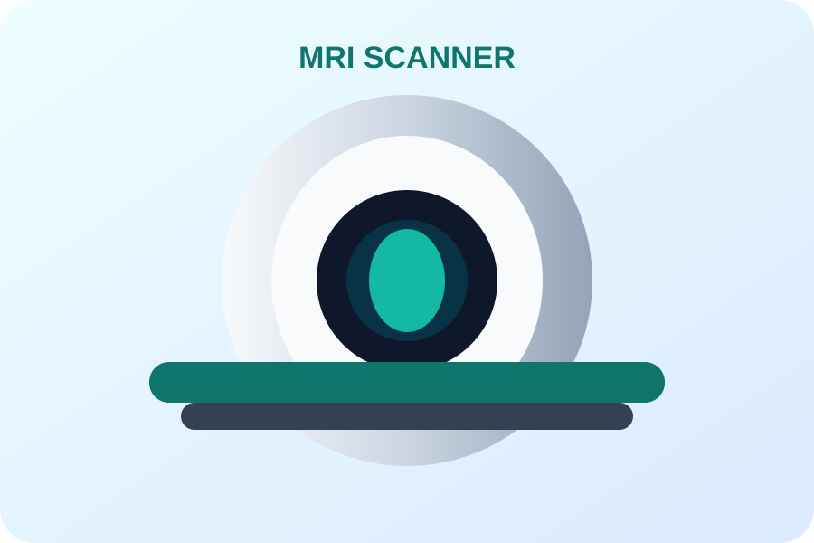
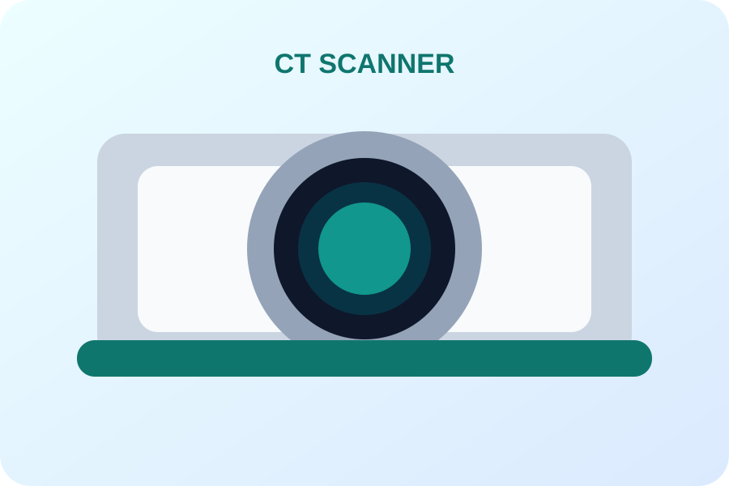
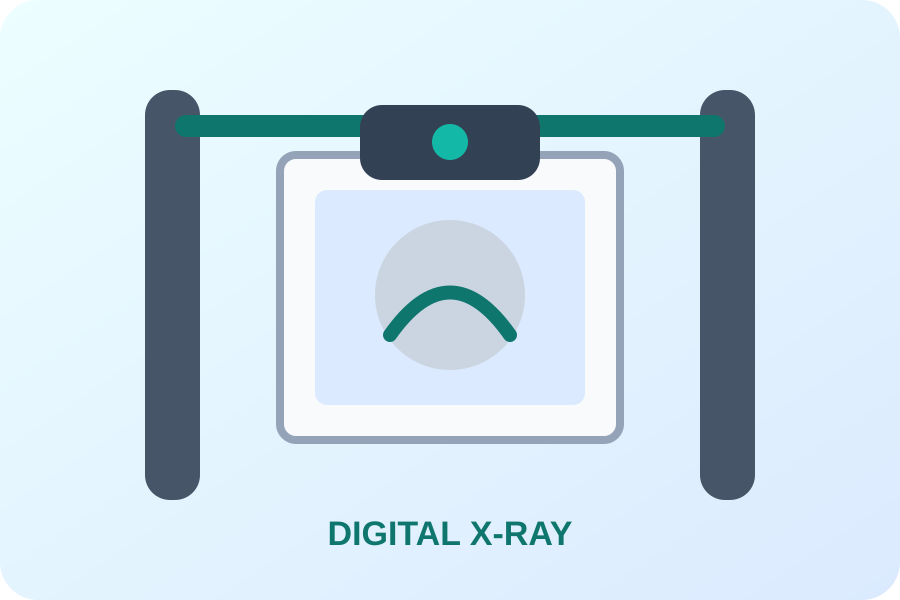
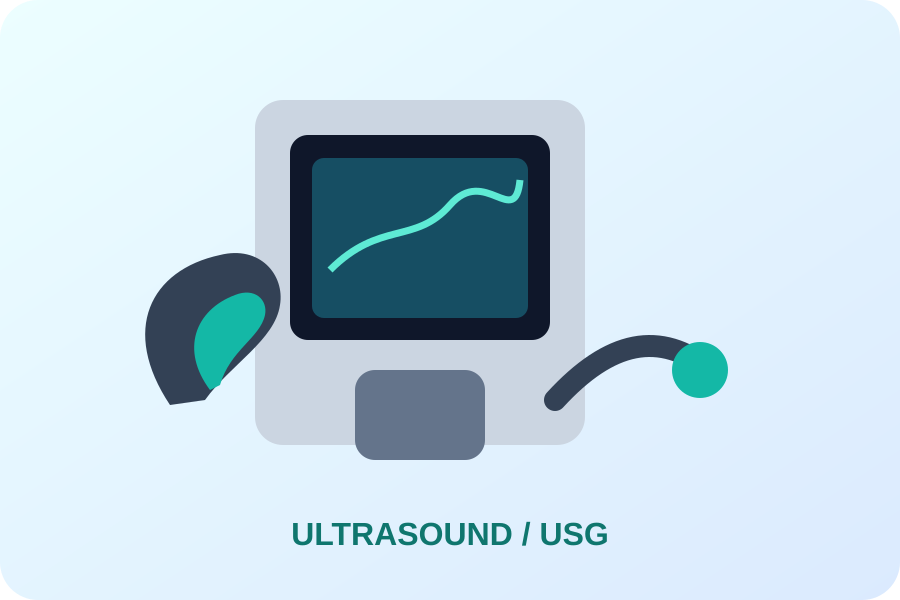

SERVICES
Diagnostic imaging under one roof.
Explore MRI, CT, X-Ray and Ultrasound/USG.

MRI
Brain, spine, joints and selected abdominal/pelvic examinations, including MRCP and MR Angiography.

CT Scan
Brain, chest, abdomen/pelvis, KUB, HRCT and CT Angiography.

X-Ray
Chest, spine, knee, shoulder, hand and foot digital radiography.

Ultrasound / USG
Abdomen/pelvis, KUB, thyroid, breast, Doppler and obstetric ultrasound.